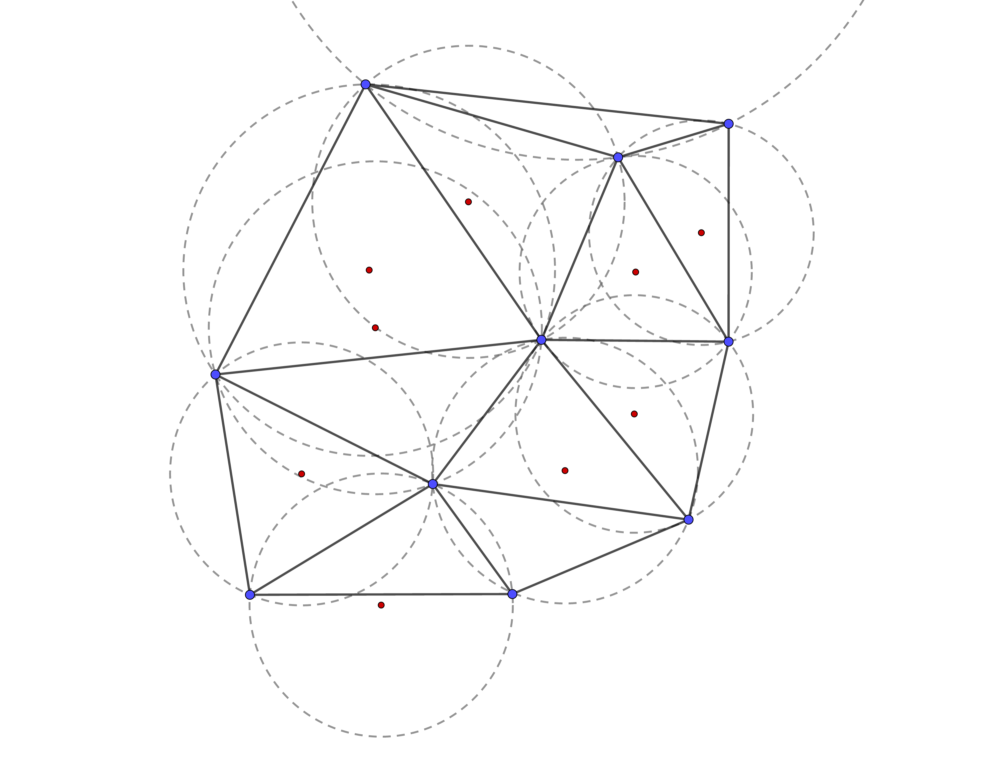

3.1 - Delaunay Triangulation
The first key concept we introduce is the Delaunay triangulation, a particular simplicial triangulation for a set of Sites $S$ developed by the Russian Mathematician Boris Delaunay in 1934 [Del34]. A Delaunay Triangulation of the sites $S$ $\mathcal D_S$ is built such that no point in $S$ is inside the circumball of any simplex in $\mathcal D$. Delaunay Triangulations maximize the minimum angle of all the angles of the triangles in the triangulation in order to try avoiding sliver triangles.
A special situation is not defined for Delaunay triangulation: if $d+2$ or more points lies on the same $d$-circumball (assuming no other point is inside of it) then the Delaunay triangulation is not unique since more than one complex could be built between them. A simple example is when a 2-dimensional square. Here all the four vertices are on the circumcircle of the square and therefore for each choice of a diagonal we will have a legal Delaunay triangulation.

Figure 1: Delaunay Triangulation of the blue sites. In red its corresponding circumcenters.
This particular situation led us to consider the set $S$ made of points in a general position.
Usually Delaunay triangulation is built over the euclidean metric (also known as $2$-norm):
\[ d(P, Q) = \|P-Q\|_2 = \sqrt{(\sum_{i=1}^D (P[i] - Q[i])^2)}\]
however it could be obtained using any kind of metrics (The esistence and the uniqueness are not guaranteed).
Properties
Let $n = |S|$. We have that the Delaunay Triangulation $\mathcal D_S$ has the following properties:
- The union of all simplices in the triangulation is the convex hull of the points.
- The Delaunay triangulation contains $\mathcal O(n\lceil D / 2\rceil)$ simplices. [Rai95]
- In the plane $(D = 2)$, if there are $b$ vertices on the convex hull, then any triangulation of the points has at most $2n − 2 − b$ triangles, plus one exterior face (see Euler characteristic).
- If points are distributed according to a Poisson process in the plane with constant intensity, then each vertex has on average six surrounding triangles. More generally for the same process in $D$ dimensions the average number of neighbors is a constant depending only on $d$. [Mei53]
- In the plane, the Delaunay triangulation maximizes the minimum angle. Compared to any other triangulation of the points, the smallest angle in the Delaunay triangulation is at least as large as the smallest angle in any other. However, the Delaunay triangulation does not necessarily minimize the maximum angle. [ETW92] The Delaunay triangulation also does not necessarily minimize the length of the edges.
- A circle circumscribing any Delaunay triangle does not contain any other input points in its interior.
- If a circle passing through two of the input points doesn't contain any other of them in its interior, then the segment connecting the two points is an edge of a Delaunay triangulation of the given points.
- Each triangle of the Delaunay triangulation of a set of points in $D$-dimensional spaces corresponds to a facet of convex hull of the projection of the points onto a $(D+1)$-dimensional paraboloid, and vice versa.
- The closest neighbor $b$ to any point $p \in S$ is on an edge $\overline{bp}$ in the Delaunay triangulation since the nearest neighbor graph is a subgraph of the Delaunay triangulation.
- The Delaunay triangulation is a geometric spanner: In the plane $(D = 2)$, the shortest path between two vertices, along Delaunay edges, is known to be no longer than $4\pi/3\sqrt3\approx 2.418$ times the Euclidean distance between them. [KG92]
Other formulations of Delaunay Triangulation
The problem of finding the Delaunay triangulation of a set of points in $D$-dimensional Euclidean space can be converted to the problem of finding the convex hull of a set of points in $(D+1)$-dimensional space, by giving each point $P$ an extra coordinate equal to $|P|^2$, taking the bottom side of the convex hull, and mapping back to $D$-dimensional space by deleting the last coordinate. As the convex hull is unique, so is the triangulation, assuming all facets of the convex hull are simplices. Nonsimplicial facets only occur when $D + 2$ of the original points lie on the same $D$-hypersphere, i.e., the points are not in general position.